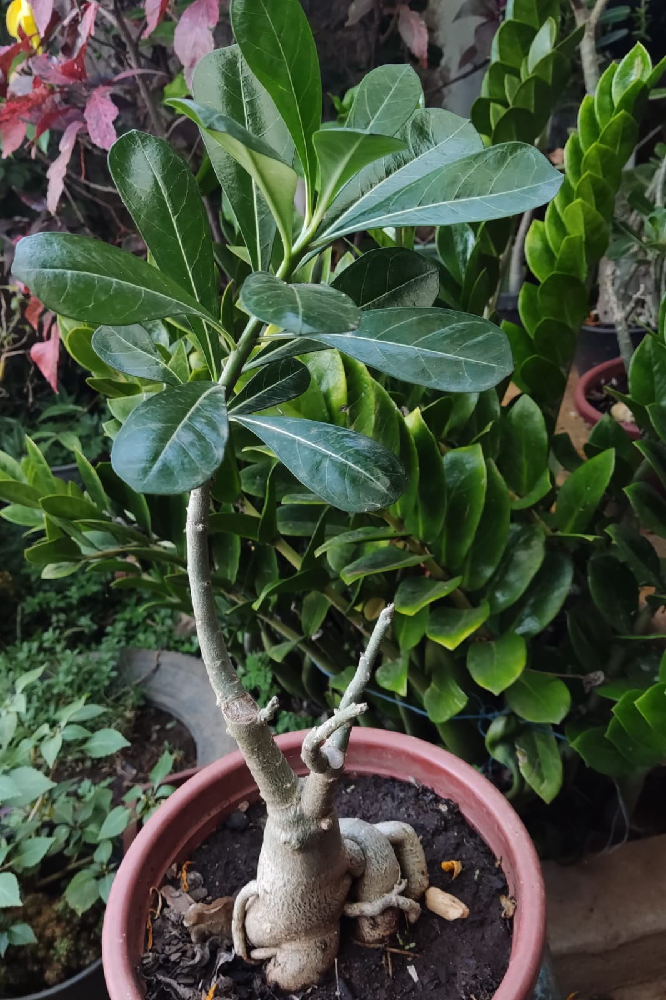
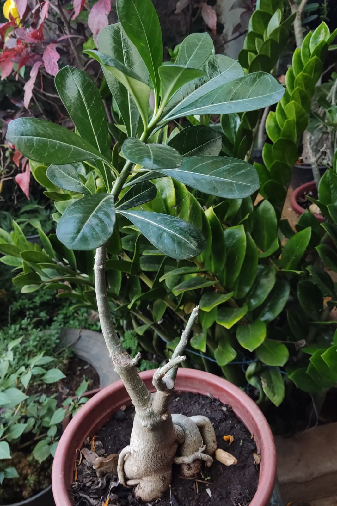

Nessa página eu vou mostrar um pouco das minhas plantas, parte de suas histórias e dicas de como cuidar delas.
Tudo começou quando eu ganhei a minha primeira plantinha no ano de 2019, o que eu não sabia era que depois disso meu quintal iria ficar parecendo um botânico kkkkkkkkkk. Essas fotos logo abaixo estão mostrando várias fases dela, de quando ganhei até hoje. Atualmente ela não está muito desenvolvida, talvez por falta de cuidado ou por genética mesmo.


 

Ter plantas não é simplesmente colocar elas na terra e deixar lá, se você fizer isso, provavelmente elas vão morrer. É necessário um cuidado com o solo, tamanho de caqueiro, vezes que rega por semana, quantidade de sol que elas tomam e várias outras coisas. Abaixo vou deixar uma tabela com tipos mais comuns e cuidados básicos com cada uma.
| Tipos | Frequência de rega | Luz solar |
|---|---|---|
| Rosa do deserto | Sempre que a terra estiver seca | 2 a 3 horas por dia e claridade constante |
| Aloe Vera | Uma vez por semana | Pelo menos 8 horas por dia |
| Cactos | Uma vez por semana | Em média 5 horas de sol direto |
| Samambaias | Diariamente, mas com pouca água | Bastante luminosidade, mas sem luz direta do sol |
| Espada de São Jorge | Sempre que a terra estiver seca | Luz solar indireta ou meia sombra |